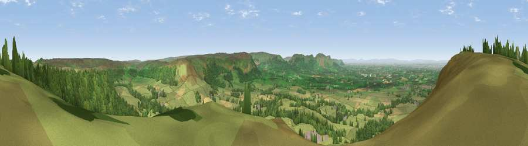

Easby Moor
#1365 in England · top 7% of its area beats it · near KildaleThe view, rendered

A 360° render of this exact spot computed from the terrain model, tree cover and land cover — summer colours, afternoon light, calibrated against photographs of famous viewpoints. Real trees, hedges and buildings will differ in detail.
The panorama
Grey silhouette: terrain skyline in each direction (720 bearings, Earth curvature and refraction included). Dashed green: skyline with trees (+15 m) and buildings (+8 m) as obstacles. Blue strip: how far the ground is visible on each bearing.
Where the view opens
Wedge length = distance to the farthest visible ground on that bearing (vegetation-aware). Rings at 10, 25 and 50 km.
What fills the view
45% grassland · 39% woodland · 14% cropland · 1% built-up
Angular shares of the visible panorama (visual magnitude), not map area. Landscape diversity 0.46 (0–1 Shannon).
Key numbers
More beautiful places nearby
The staircase of upgrades: each row has a higher view potential than everything closer. Driving times are estimates from straight-line distance, calibrated against real road routing — check an actual route before setting out.
| Place | Direction | Drive | Score |
|---|---|---|---|
| Viewpoint near Hutton Village | N · 3 km | ~7 min | 83.0 |
| Roseberry Topping | NNW · 3 km | ~7 min | 85.8 |
| Viewpoint near Lazenby | NNW · 9 km | ~17 min | 86.4 |
| Warsett Hill | NE · 15 km | ~27 min | 86.8 |
| Viewpoint near Easington | ENE · 18 km | ~31 min | 90.2 |
| The Knoll | SSW · 435 km | ~409 min | 91.0 |
54.48105, -1.08791 · source: dobih hill · position refined by local search. Computed location — check access rights before visiting.